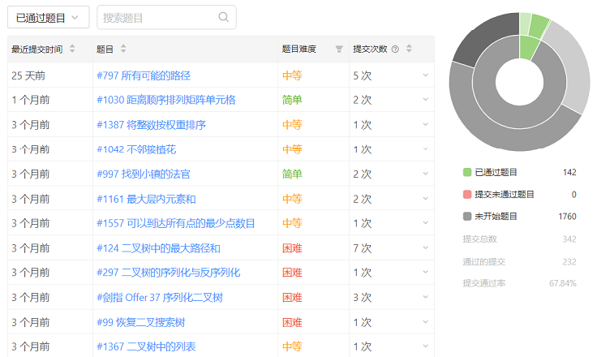

<!DOCTYPE html>
<html lang="en">
<head><meta name="generator" content="Hexo 3.8.0">
    <meta charset="utf-8">
    
    <title>
        About |
        
        YingLong</title>
    
    
        <meta name="keywords" content="About">
    
    <meta name="viewport" content="width=device-width, initial-scale=1, maximum-scale=1">
    <meta name="description" content="基本信息姓名：姚应龙（可以叫我小姚或姚工） 性别&amp;amp;年龄：男/1993（身份证1991与实际有出入） 工龄：Java开发，正式工作3年半，大学期间公司实习近一年（中移在线一年，冰鉴两年半仍在职）  教育背景学历：本科/西华大学/信息工程 时间：2013.09—2017.06 主修：计算机应用基础A、信息论与编码、通信原理、无线通信原理与移动网络、数字通信等。 由于读了一年高四，从二专到二本">
<meta property="og:type" content="website">
<meta property="og:title" content="About">
<meta property="og:url" content="https://yaoyinglong.github.io/about/index.html">
<meta property="og:site_name" content="YingLong">
<meta property="og:description" content="基本信息姓名：姚应龙（可以叫我小姚或姚工） 性别&amp;amp;年龄：男/1993（身份证1991与实际有出入） 工龄：Java开发，正式工作3年半，大学期间公司实习近一年（中移在线一年，冰鉴两年半仍在职）  教育背景学历：本科/西华大学/信息工程 时间：2013.09—2017.06 主修：计算机应用基础A、信息论与编码、通信原理、无线通信原理与移动网络、数字通信等。 由于读了一年高四，从二专到二本">
<meta property="og:locale" content="en">
<meta property="og:image" content="https://yaoyinglong.github.io/images/杂记/LeetCode做题分析.png">
<meta property="og:updated_time" content="2020-12-14T05:56:04.511Z">
<meta name="twitter:card" content="summary">
<meta name="twitter:title" content="About">
<meta name="twitter:description" content="基本信息姓名：姚应龙（可以叫我小姚或姚工） 性别&amp;amp;年龄：男/1993（身份证1991与实际有出入） 工龄：Java开发，正式工作3年半，大学期间公司实习近一年（中移在线一年，冰鉴两年半仍在职）  教育背景学历：本科/西华大学/信息工程 时间：2013.09—2017.06 主修：计算机应用基础A、信息论与编码、通信原理、无线通信原理与移动网络、数字通信等。 由于读了一年高四，从二专到二本">
<meta name="twitter:image" content="https://yaoyinglong.github.io/images/杂记/LeetCode做题分析.png">
    

    

    
        <link rel="icon" href="/favicon.ico">
    

    <link rel="stylesheet" href="/libs/font-awesome/css/font-awesome.min.css">
    <link rel="stylesheet" href="/libs/open-sans/styles.css">
    <link rel="stylesheet" href="/libs/source-code-pro/styles.css">

    <link rel="stylesheet" href="/css/style.css">
    <script src="/libs/jquery/2.1.3/jquery.min.js"></script>
    <script src="/libs/jquery/plugins/cookie/1.4.1/jquery.cookie.js"></script>
    
    
        <link rel="stylesheet" href="/libs/lightgallery/css/lightgallery.min.css">
    
    
        <link rel="stylesheet" href="/libs/justified-gallery/justifiedGallery.min.css">
    
    
    
    


</head>
</html>
<body>
<div id="container">
    <header id="header">
    <div id="header-main" class="header-inner">
        <div class="outer">
            <a href="/" id="logo">
                <i class="logo"></i>
                <span class="site-title">YingLong</span>
            </a>
            <nav id="main-nav">
                
                    <a class="main-nav-link" href="/">Home</a>
                
                    <a class="main-nav-link" href="/archives">Archives</a>
                
                    <a class="main-nav-link" href="/categories">Categories</a>
                
                    <a class="main-nav-link" href="/tags">Tags</a>
                
                    <a class="main-nav-link" href="/about">About</a>
                
            </nav>
            
            <div id="search-form-wrap">
    
        <form class="search-form">
            <input type="text" class="ins-search-input search-form-input" placeholder="Search">
            <button type="submit" class="search-form-submit"></button>
        </form>
        <div class="ins-search">
    <div class="ins-search-mask"></div>
    <div class="ins-search-container">
        <div class="ins-input-wrapper">
            <input type="text" class="ins-search-input" placeholder="Type something...">
            <span class="ins-close ins-selectable"><i class="fa fa-times-circle"></i></span>
        </div>
        <div class="ins-section-wrapper">
            <div class="ins-section-container"></div>
        </div>
    </div>
</div>
<script>
    (function (window) {
        var INSIGHT_CONFIG = {
            TRANSLATION: {
                POSTS: 'Posts',
                PAGES: 'Pages',
                CATEGORIES: 'Categories',
                TAGS: 'Tags',
                UNTITLED: '(Untitled)',
            },
            ROOT_URL: '/',
            CONTENT_URL: '/content.json',
        };
        window.INSIGHT_CONFIG = INSIGHT_CONFIG;
    })(window);
</script>
<script src="/js/insight.js"></script>
    
</div>
        </div>
    </div>
    <div id="main-nav-mobile" class="header-sub header-inner">
        <table class="menu outer">
            <tr>
                
                    <td><a class="main-nav-link" href="/">Home</a></td>
                
                    <td><a class="main-nav-link" href="/archives">Archives</a></td>
                
                    <td><a class="main-nav-link" href="/categories">Categories</a></td>
                
                    <td><a class="main-nav-link" href="/tags">Tags</a></td>
                
                    <td><a class="main-nav-link" href="/about">About</a></td>
                
                <td>
                    
    <div class="search-form">
        <input type="text" class="ins-search-input search-form-input" placeholder="Search">
    </div>

                </td>
            </tr>
        </table>
    </div>
</header>

    <div class="outer">
        
        
            <aside id="sidebar">
    
        
    <div class="widget-wrap" id="categories">
        <h3 class="widget-title">
            <span>categories</span>
            &nbsp;
            <a id="allExpand" href="#">
                <i class="fa fa-angle-double-down fa-2x"></i>
            </a>
        </h3>

        
        
        
            <ul class="unstyled" id="tree">
                
                    <li class="directory">
                        <a href="#" data-role="directory">
                            <i class="fa fa-folder"></i>
                            &nbsp;
                            DB
                        </a>
                        
            <ul class="unstyled" id="tree">
                
                    <li class="file"><a href="/Blog/DB/MySQL基础/">MySQL基础</a></li>
                
                    <li class="file"><a href="/Blog/DB/MySQL常用SQL总结/">MySQL常用SQL总结</a></li>
                
                    <li class="file"><a href="/Blog/DB/分库分表/">分库分表</a></li>
                
            </ul>
        
                    </li>
                
                    <li class="directory">
                        <a href="#" data-role="directory">
                            <i class="fa fa-folder"></i>
                            &nbsp;
                            Git
                        </a>
                        
            <ul class="unstyled" id="tree">
                
                    <li class="file"><a href="/Blog/Git/GIt基本概念/">Git基本概念</a></li>
                
                    <li class="file"><a href="/Blog/Git/GIt常用命令/">Git常用命令</a></li>
                
                    <li class="file"><a href="/Blog/Git/分支管理理解/">分支管理理解</a></li>
                
            </ul>
        
                    </li>
                
                    <li class="directory">
                        <a href="#" data-role="directory">
                            <i class="fa fa-folder"></i>
                            &nbsp;
                            Go
                        </a>
                        
            <ul class="unstyled" id="tree">
                
                    <li class="file"><a href="/Blog/Go/Go基础/">Go基础</a></li>
                
            </ul>
        
                    </li>
                
                    <li class="directory">
                        <a href="#" data-role="directory">
                            <i class="fa fa-folder"></i>
                            &nbsp;
                            Java
                        </a>
                        
            <ul class="unstyled" id="tree">
                
                    <li class="directory">
                        <a href="#" data-role="directory">
                            <i class="fa fa-folder"></i>
                            &nbsp;
                            VM
                        </a>
                        
            <ul class="unstyled" id="tree">
                
                    <li class="file"><a href="/Blog/Java/VM/HotSpot收集算法实现/">HotSpot收集算法实现</a></li>
                
                    <li class="file"><a href="/Blog/Java/VM/JVM内存池/">JVM内存池</a></li>
                
                    <li class="file"><a href="/Blog/Java/VM/内存非配与回收策略/">内存分配与回收策略</a></li>
                
                    <li class="file"><a href="/Blog/Java/VM/Java内存区域/">Java内存区域</a></li>
                
                    <li class="file"><a href="/Blog/Java/VM/Minor&Major&Full GC/">Minor&Major&Full GC</a></li>
                
                    <li class="file"><a href="/Blog/Java/VM/OutOfMemoryError异常/">OOM异常实验</a></li>
                
                    <li class="file"><a href="/Blog/Java/VM/垃圾收集算法/">垃圾收集算法</a></li>
                
                    <li class="file"><a href="/Blog/Java/VM/堆中对象分配&布局&访问/">堆中对象分配&布局&访问</a></li>
                
                    <li class="file"><a href="/Blog/Java/VM/对象是否存活/">对象是否存活</a></li>
                
                    <li class="file"><a href="/Blog/Java/VM/类加载的时机/">类加载的时机</a></li>
                
                    <li class="file"><a href="/Blog/Java/VM/运行时栈帧结构/">运行时栈帧结构</a></li>
                
                    <li class="file"><a href="/Blog/Java/VM/垃圾收集器/">垃圾收集器</a></li>
                
                    <li class="file"><a href="/Blog/Java/VM/方法调用/">方法调用</a></li>
                
                    <li class="file"><a href="/Blog/Java/VM/字节码指令/">字节码指令</a></li>
                
                    <li class="file"><a href="/Blog/Java/VM/理解GC日志/">理解GC日志</a></li>
                
                    <li class="file"><a href="/Blog/Java/VM/类加载器/">类加载器</a></li>
                
                    <li class="file"><a href="/Blog/Java/VM/Class文件结构/">Class文件结构</a></li>
                
                    <li class="file"><a href="/Blog/Java/VM/属性表集合/">属性表集合</a></li>
                
                    <li class="file"><a href="/Blog/Java/VM/类加载过程/">类加载过程</a></li>
                
            </ul>
        
                    </li>
                
                    <li class="directory">
                        <a href="#" data-role="directory">
                            <i class="fa fa-folder"></i>
                            &nbsp;
                            基础
                        </a>
                        
            <ul class="unstyled" id="tree">
                
                    <li class="file"><a href="/Blog/Java/基础/lambda常用总结/">lambda常用总结</a></li>
                
                    <li class="file"><a href="/Blog/Java/基础/时间及日期总结/">Java8时间及日期</a></li>
                
                    <li class="file"><a href="/Blog/Java/基础/位运算/">位运算</a></li>
                
                    <li class="file"><a href="/Blog/Java/基础/注解实现及应用/">注解实现及应用</a></li>
                
                    <li class="file"><a href="/Blog/Java/基础/HashMap源码分析JDK8/">HashMap源码分析JDK8</a></li>
                
                    <li class="file"><a href="/Blog/Java/基础/HashMap源码分析JDK7/">HashMap源码分析JDK7</a></li>
                
                    <li class="file"><a href="/Blog/Java/基础/反射基础/">反射基础</a></li>
                
                    <li class="file"><a href="/Blog/Java/基础/动态代理/">动态代理</a></li>
                
                    <li class="file"><a href="/Blog/Java/基础/Java实用工具库/">Java实用工具库</a></li>
                
            </ul>
        
                    </li>
                
                    <li class="directory">
                        <a href="#" data-role="directory">
                            <i class="fa fa-folder"></i>
                            &nbsp;
                            工具
                        </a>
                        
            <ul class="unstyled" id="tree">
                
                    <li class="file"><a href="/Blog/Java/工具/Java中调用Groovy脚本/">Java中调用Groovy脚本</a></li>
                
                    <li class="file"><a href="/Blog/Java/工具/国密SM2/">国密SM2</a></li>
                
                    <li class="file"><a href="/Blog/Java/工具/国密SM4/">国密SM4</a></li>
                
            </ul>
        
                    </li>
                
                    <li class="directory">
                        <a href="#" data-role="directory">
                            <i class="fa fa-folder"></i>
                            &nbsp;
                            并发
                        </a>
                        
            <ul class="unstyled" id="tree">
                
                    <li class="file"><a href="/Blog/Java/并发/原子性、可见性、有序性/">原子性、可见性、有序性</a></li>
                
                    <li class="file"><a href="/Blog/Java/并发/Synchronized总结/">Synchronized总结</a></li>
                
                    <li class="file"><a href="/Blog/Java/并发/线程安全/">线程安全</a></li>
                
                    <li class="file"><a href="/Blog/Java/并发/线程安全实现方式/">线程安全实现方式</a></li>
                
                    <li class="file"><a href="/Blog/Java/并发/ThreadLocal原理/">ThreadLocal原理</a></li>
                
                    <li class="file"><a href="/Blog/Java/并发/Volatile原理/">Volatile原理</a></li>
                
                    <li class="file"><a href="/Blog/Java/并发/Java与线程/">Java与线程</a></li>
                
                    <li class="file"><a href="/Blog/Java/并发/锁优化/">锁优化</a></li>
                
                    <li class="file"><a href="/Blog/Java/并发/Java内存模型与线程/">Java内存模型</a></li>
                
            </ul>
        
                    </li>
                
                    <li class="file"><a href="/Blog/Java/JVM整体概览/">JVM整体概览</a></li>
                
            </ul>
        
                    </li>
                
                    <li class="directory">
                        <a href="#" data-role="directory">
                            <i class="fa fa-folder"></i>
                            &nbsp;
                            Linux
                        </a>
                        
            <ul class="unstyled" id="tree">
                
                    <li class="file"><a href="/Blog/Linux/Linux常用命令/">Linux常用命令</a></li>
                
                    <li class="file"><a href="/Blog/Linux/Linux常用技巧/">Linux常用技巧</a></li>
                
            </ul>
        
                    </li>
                
                    <li class="directory">
                        <a href="#" data-role="directory">
                            <i class="fa fa-folder"></i>
                            &nbsp;
                            Maven
                        </a>
                        
            <ul class="unstyled" id="tree">
                
                    <li class="file"><a href="/Blog/Maven/Maven加密JAR包/">Maven加密JAR包</a></li>
                
                    <li class="file"><a href="/Blog/Maven/Maven基础/">Maven基础</a></li>
                
                    <li class="file"><a href="/Blog/Maven/Maven常用/">Maven常用</a></li>
                
                    <li class="file"><a href="/Blog/Maven/Maven属性/">Maven属性</a></li>
                
                    <li class="file"><a href="/Blog/Maven/Maven常用工具/">Maven常用工具</a></li>
                
                    <li class="file"><a href="/Blog/Maven/Maven插件编写/">Maven插件编写</a></li>
                
                    <li class="file"><a href="/Blog/Maven/Maven生命周期/">Maven生命周期</a></li>
                
                    <li class="file"><a href="/Blog/Maven/Maven个性化打包/">Maven个性化打包</a></li>
                
                    <li class="file"><a href="/Blog/Maven/Maven仓库/">Maven仓库</a></li>
                
                    <li class="file"><a href="/Blog/Maven/Maven插件基础/">Maven插件基础</a></li>
                
                    <li class="file"><a href="/Blog/Maven/Maven聚合与继承/">Maven聚合与继承</a></li>
                
                    <li class="file"><a href="/Blog/Maven/Maven常用插件/">Maven常用插件</a></li>
                
                    <li class="file"><a href="/Blog/Maven/Maven标签全解/">Maven标签全解</a></li>
                
                    <li class="file"><a href="/Blog/Maven/Maven Assembly标签全解/">Maven Assembly标签全解</a></li>
                
            </ul>
        
                    </li>
                
                    <li class="directory">
                        <a href="#" data-role="directory">
                            <i class="fa fa-folder"></i>
                            &nbsp;
                            Python
                        </a>
                        
            <ul class="unstyled" id="tree">
                
                    <li class="file"><a href="/Blog/Python/Excel文件数据抽取/">Excel文件数据抽取</a></li>
                
            </ul>
        
                    </li>
                
                    <li class="directory">
                        <a href="#" data-role="directory">
                            <i class="fa fa-folder"></i>
                            &nbsp;
                            Test
                        </a>
                        
            <ul class="unstyled" id="tree">
                
                    <li class="file"><a href="/Blog/Test/IT测试总结/">IT测试总结</a></li>
                
                    <li class="file"><a href="/Blog/Test/JMeter日常总结/">JMeter日常总结</a></li>
                
                    <li class="file"><a href="/Blog/Test/LoadRunner日常总结/">LoadRunner日常总结</a></li>
                
                    <li class="file"><a href="/Blog/Test/UT测试总结/">UT测试总结</a></li>
                
            </ul>
        
                    </li>
                
                    <li class="directory">
                        <a href="#" data-role="directory">
                            <i class="fa fa-folder"></i>
                            &nbsp;
                            中间件
                        </a>
                        
            <ul class="unstyled" id="tree">
                
                    <li class="directory">
                        <a href="#" data-role="directory">
                            <i class="fa fa-folder"></i>
                            &nbsp;
                            Spring
                        </a>
                        
            <ul class="unstyled" id="tree">
                
                    <li class="file"><a href="/Blog/中间件/Spring/IoC容器/">IoC容器</a></li>
                
                    <li class="file"><a href="/Blog/中间件/Spring/Spring Gzip压缩/">Spring Gzip压缩</a></li>
                
                    <li class="file"><a href="/Blog/中间件/Spring/Spring整体架构/">Spring整体架构</a></li>
                
                    <li class="file"><a href="/Blog/中间件/Spring/Spring线程池跨线程数据共享/">Spring线程池跨线程数据共享</a></li>
                
                    <li class="file"><a href="/Blog/中间件/Spring/Spring知识点/">Spring知识点</a></li>
                
                    <li class="file"><a href="/Blog/中间件/Spring/SpringMvc异步/">SpringMvc异步原理及实现</a></li>
                
                    <li class="file"><a href="/Blog/中间件/Spring/Hystrix总结/">Hystrix总结</a></li>
                
                    <li class="file"><a href="/Blog/中间件/Spring/Spring初始化扩展/">Spring初始化扩展</a></li>
                
            </ul>
        
                    </li>
                
                    <li class="directory">
                        <a href="#" data-role="directory">
                            <i class="fa fa-folder"></i>
                            &nbsp;
                            常见问题
                        </a>
                        
            <ul class="unstyled" id="tree">
                
                    <li class="file"><a href="/Blog/中间件/常见问题/HBase依赖冲突/">HBase依赖冲突</a></li>
                
                    <li class="file"><a href="/Blog/中间件/常见问题/Maven编译后文件损坏/">Maven编译后文件损坏</a></li>
                
            </ul>
        
                    </li>
                
                    <li class="file"><a href="/Blog/中间件/Redis分布式锁实现/">Redis分布式锁实现</a></li>
                
                    <li class="file"><a href="/Blog/中间件/Redis总结/">Redis总结</a></li>
                
                    <li class="file"><a href="/Blog/中间件/Tomcat工作原理/">Tomcat工作原理</a></li>
                
            </ul>
        
                    </li>
                
                    <li class="directory">
                        <a href="#" data-role="directory">
                            <i class="fa fa-folder"></i>
                            &nbsp;
                            协议族
                        </a>
                        
            <ul class="unstyled" id="tree">
                
                    <li class="file"><a href="/Blog/协议族/TCPIP四层&五层模型/">TCP/IP四层&五层模型</a></li>
                
                    <li class="file"><a href="/Blog/协议族/网络基础知识/">网络基础知识</a></li>
                
                    <li class="file"><a href="/Blog/协议族/以太网/">以太网</a></li>
                
                    <li class="file"><a href="/Blog/协议族/地址解析协议/">地址解析协议ARP</a></li>
                
            </ul>
        
                    </li>
                
                    <li class="directory">
                        <a href="#" data-role="directory">
                            <i class="fa fa-folder"></i>
                            &nbsp;
                            杂记
                        </a>
                        
            <ul class="unstyled" id="tree">
                
                    <li class="file"><a href="/Blog/杂记/IDEA实用插件/">IDEA实用插件</a></li>
                
                    <li class="file"><a href="/Blog/杂记/JAVA实用工具/">JAVA实用工具</a></li>
                
                    <li class="file"><a href="/Blog/杂记/IDEA快捷的使用/">IDEA的快捷使用</a></li>
                
                    <li class="file"><a href="/Blog/杂记/Win实用工具/">Win实用工具</a></li>
                
                    <li class="file"><a href="/Blog/杂记/XSD使用总结/">XSD实用总结</a></li>
                
                    <li class="file"><a href="/Blog/杂记/SonarQube配置总结/">SonarQube配置总结</a></li>
                
            </ul>
        
                    </li>
                
                    <li class="directory">
                        <a href="#" data-role="directory">
                            <i class="fa fa-folder"></i>
                            &nbsp;
                            算法
                        </a>
                        
            <ul class="unstyled" id="tree">
                
                    <li class="file"><a href="/Blog/算法/二叉搜索树/">二叉搜索树</a></li>
                
                    <li class="file"><a href="/Blog/算法/平衡二叉树/">平衡二叉树</a></li>
                
                    <li class="file"><a href="/Blog/算法/树基础/">树基础</a></li>
                
                    <li class="file"><a href="/Blog/算法/排序算法/">排序算法</a></li>
                
                    <li class="file"><a href="/Blog/算法/图基础/">图基础</a></li>
                
            </ul>
        
                    </li>
                
                    <li class="directory">
                        <a href="#" data-role="directory">
                            <i class="fa fa-folder"></i>
                            &nbsp;
                            自度
                        </a>
                        
            <ul class="unstyled" id="tree">
                
                    <li class="file"><a href="/Blog/自度/隐形眼镜攻略/"></a></li>
                
            </ul>
        
                    </li>
                
                    <li class="directory">
                        <a href="#" data-role="directory">
                            <i class="fa fa-folder"></i>
                            &nbsp;
                            设计模式
                        </a>
                        
            <ul class="unstyled" id="tree">
                
                    <li class="directory">
                        <a href="#" data-role="directory">
                            <i class="fa fa-folder"></i>
                            &nbsp;
                            创建型模式
                        </a>
                        
            <ul class="unstyled" id="tree">
                
                    <li class="file"><a href="/Blog/设计模式/创建型模式/单例模式/">单例模式</a></li>
                
                    <li class="file"><a href="/Blog/设计模式/创建型模式/原型模式/">原型模式</a></li>
                
                    <li class="file"><a href="/Blog/设计模式/创建型模式/建造者模式/">建造者模式</a></li>
                
                    <li class="file"><a href="/Blog/设计模式/创建型模式/工厂模式/">工厂模式</a></li>
                
            </ul>
        
                    </li>
                
                    <li class="directory">
                        <a href="#" data-role="directory">
                            <i class="fa fa-folder"></i>
                            &nbsp;
                            结构型模式
                        </a>
                        
            <ul class="unstyled" id="tree">
                
                    <li class="file"><a href="/Blog/设计模式/结构型模式/代理模式/">代理模式</a></li>
                
                    <li class="file"><a href="/Blog/设计模式/结构型模式/装饰模式/">装饰模式</a></li>
                
                    <li class="file"><a href="/Blog/设计模式/结构型模式/适配器模式/">适配器模式</a></li>
                
                    <li class="file"><a href="/Blog/设计模式/结构型模式/组合模式/">组合模式</a></li>
                
            </ul>
        
                    </li>
                
                    <li class="directory">
                        <a href="#" data-role="directory">
                            <i class="fa fa-folder"></i>
                            &nbsp;
                            行为型模式
                        </a>
                        
            <ul class="unstyled" id="tree">
                
                    <li class="file"><a href="/Blog/设计模式/行为型模式/模板方法模式/">模板方法模式</a></li>
                
                    <li class="file"><a href="/Blog/设计模式/行为型模式/中介者模式/">中介者模式</a></li>
                
                    <li class="file"><a href="/Blog/设计模式/行为型模式/命令模式/">命令模式</a></li>
                
                    <li class="file"><a href="/Blog/设计模式/行为型模式/责任链模式/">责任链模式</a></li>
                
                    <li class="file"><a href="/Blog/设计模式/行为型模式/策略模式/">策略模式</a></li>
                
                    <li class="file"><a href="/Blog/设计模式/行为型模式/迭代器模式/">迭代器模式</a></li>
                
                    <li class="file"><a href="/Blog/设计模式/行为型模式/观察者模式/">观察者模式</a></li>
                
            </ul>
        
                    </li>
                
                    <li class="file"><a href="/Blog/设计模式/SOLID基本原则/">SOLID基本原则</a></li>
                
                    <li class="file"><a href="/Blog/设计模式/设计模式概览/">设计模式概览</a></li>
                
            </ul>
        
                    </li>
                
                    <li class="file"><a href="/Blog/index/">Welcome YingLong's Blog</a></li>
                
            </ul>
        
    </div>
    <script>
        $(document).ready(function () {
            var iconFolderOpenClass = 'fa-folder-open';
            var iconFolderCloseClass = 'fa-folder';
            var iconAllExpandClass = 'fa-angle-double-down';
            var iconAllPackClass = 'fa-angle-double-up';
            // Handle directory-tree expansion:
            // 左键单独展开目录
            $(document).on('click', '#categories a[data-role="directory"]', function (event) {
                event.preventDefault();

                var icon = $(this).children('.fa');
                var expanded = icon.hasClass(iconFolderOpenClass);
                var subtree = $(this).siblings('ul');
                icon.removeClass(iconFolderOpenClass).removeClass(iconFolderCloseClass);
                if (expanded) {
                    if (typeof subtree != 'undefined') {
                        subtree.slideUp({duration: 100});
                    }
                    icon.addClass(iconFolderCloseClass);
                } else {
                    if (typeof subtree != 'undefined') {
                        subtree.slideDown({duration: 100});
                    }
                    icon.addClass(iconFolderOpenClass);
                }
            });
            // 右键展开下属所有目录
            $('#categories a[data-role="directory"]').bind("contextmenu", function (event) {
                event.preventDefault();

                var icon = $(this).children('.fa');
                var expanded = icon.hasClass(iconFolderOpenClass);
                var listNode = $(this).siblings('ul');
                var subtrees = $.merge(listNode.find('li ul'), listNode);
                var icons = $.merge(listNode.find('.fa'), icon);
                icons.removeClass(iconFolderOpenClass).removeClass(iconFolderCloseClass);
                if (expanded) {
                    subtrees.slideUp({duration: 100});
                    icons.addClass(iconFolderCloseClass);
                } else {
                    subtrees.slideDown({duration: 100});
                    icons.addClass(iconFolderOpenClass);
                }
            })
            // 展开关闭所有目录按钮
            $(document).on('click', '#allExpand', function (event) {
                event.preventDefault();

                var icon = $(this).children('.fa');
                var expanded = icon.hasClass(iconAllExpandClass);
                icon.removeClass(iconAllExpandClass).removeClass(iconAllPackClass);
                if (expanded) {
                    $('#sidebar .fa.fa-folder').removeClass('fa-folder').addClass('fa-folder-open')
                    $('#categories li ul').slideDown({duration: 100});
                    icon.addClass(iconAllPackClass);
                } else {
                    $('#sidebar .fa.fa-folder-open').removeClass('fa-folder-open').addClass('fa-folder')
                    $('#categories li ul').slideUp({duration: 100});
                    icon.addClass(iconAllExpandClass);
                }
            });
        });
    </script>

    
    <div id="toTop" class="fa fa-angle-up"></div>
</aside>
        
        <section id="main"><article id="post-" class="article article-type-post" itemscope itemprop="blogPost">
    <div class="article-inner">
        
        
            <header class="article-header">
                
                    <div class="article-meta">
                        
                        
                        
    <div class="article-date">
        <i class="fa fa-calendar"></i>
        <a href="/about/index.html">
            <time datetime="2016-10-24T02:24:00.000Z" itemprop="datePublished">2016-10-24</time>
        </a>
    </div>


                        
                    </div>
                
                
    
        <h1 class="article-title" itemprop="name">
            About
        </h1>
    

            </header>
        
        
        <div class="article-entry" itemprop="articleBody">
            
            
                    
            
            
                <hr>
<h3 id="基本信息"><a href="#基本信息" class="headerlink" title="基本信息"></a>基本信息</h3><p><strong>姓名</strong>：<strong>姚应龙</strong>（可以叫我<strong>小姚</strong>或<strong>姚工</strong>）</p>
<p><strong>性别&amp;年龄</strong>：<strong>男<code>/</code>1993</strong>（身份证1991与实际有出入）</p>
<p><strong>工龄</strong>：<strong>Java开发，正式工作<code>3</code>年半，大学期间公司实习近一年</strong>（中移在线一年，冰鉴两年半仍在职）</p>
<hr>
<h3 id="教育背景"><a href="#教育背景" class="headerlink" title="教育背景"></a>教育背景</h3><p><strong>学历</strong>：<strong>本科<code>/</code>西华大学<code>/</code>信息工程</strong></p>
<p><strong>时间</strong>：<strong>2013.09—2017.06</strong></p>
<p><strong>主修</strong>：计算机应用基础A、信息论与编码、通信原理、无线通信原理与移动网络、数字通信等。</p>
<p>由于读了一年高四，从二专到二本，艰辛的一年使我成长了很多学到了很多感悟了很多。大学第一年自然而然的当起了学霸，大一上学期后半段，有个很厉害的老师叫卿朝进，上了我们专业的一门叫信息工程概论的课，一节课下来大家新潮澎湃，并且想在我们这批人中找一些人组建实验室。一下在我找到了我的方向，我第一个去找了他，但是由于内向腼腆，说话声音发抖脸红冒汗，最终他没有看上我。最后我连续给他发了几次邮件，最终他收留了我。</p>
<p><strong>大学四年基本是在实验室度过</strong>，第一个寒假开始在实验室学习数模电，大一下学期开始做一个小玩意简单的红外感应设备，花了整整一个学期整电路画PCB调试等，暑假老师接了一个四川省农业厅畜禽遗传资源动态监测平台的项目，什么都不懂开始硬上，整整一个暑假的煎熬一点一点的百度，才把整个项目的运行起来，最终把项目完成了，记忆尤新，从此打开了新世界的大门。</p>
<p>大二由于老师的资源，有幸参与了解联通报表的开发，开始接触Oracle，<strong>暑假到成都东叶舟科技有限公司实习</strong>。</p>
<p>大三由于同学的资源，<strong>自己接了两个小的系统开发</strong>，中途也参与了老师的一些项目。大三的暑假由于Nokia的公开日，有幸参观且进行模拟面试，最终有幸到Nokia实习了半年，这半年收获巨大，由衷感谢。</p>
<p>大四上半学期在<strong><code>Nokia</code>实习</strong>，下半学期基本在找工作，中途有两家比较满意的公司HR给了口头offer，但最终都由于业务变动未能入职，对于一心想留在成都的我最终却没能留下来有点小失落，我知道不如意才使人成长，就当是一次锻炼，便坚定信念出发了。</p>
<hr>
<h3 id="实习经历"><a href="#实习经历" class="headerlink" title="实习经历"></a>实习经历</h3><p>大学期间总共参加过两次实习。分别是在<strong>Nokia成都</strong>六个月和<strong>东叶舟科技有限公司</strong>两个月。</p>
<p>第一次是大二的暑假<strong><code>2015.07—2015.09</code></strong>为期两个月在<strong>成都东叶舟科技有限公司</strong>，主要参与了<strong>渝富金融微信平台</strong>、<strong>笑山羊商店系统</strong>、<strong>新华网微信小游戏</strong>三个系统的开发，第一个项目是做后端开发，后两个是做前端开发，也是这次终于前端后端打通了。通过这次实习最大的收获是思维方式从一个学校学生到公司员工的转变，极大的增强了适应能力，当然技术上的收获也很大，后端技术加强了，新学会了前端开发。</p>
<p>第二次实习是大三的暑假<strong><code>2016.07</code></strong>到大四上学期结束<strong><code>2017.01</code></strong>为期六个月在<strong><code>Nokia</code>成都</strong>，由于当时Nokia并不招收正式员工，以及找工作的原因并没有续实习。在<strong><code>Nokia</code></strong>就参与了一个内部项目<strong><code>Communication Matrix</code></strong>，刚开始花了一两天学了下Thymeleaf，然后做了大概一个月前端，然后开始做后端开发。这个项目简单的说是一个通用的Excel数据管理系统，当时主要是针对Nokia各个地区用到的网元配置的Excel文件。用的Spring全家桶（Spring Boot、Spring Security、Thymeleaf），这次实习可以说使我得到了一此质的提升，对框架的使用和理解有了巨大提升，最重要一点是Leader的技术很强，从他那学到了很多编程思想上的东西，即使是现在很多时候很多东西我还是在参照学习这个项目。这次实习让我不再畏惧英文文档，掌握了单元测试的思想能够灵活运用<strong><code>IT</code></strong>和<strong><code>UT</code></strong>，在<strong><code>RedHat</code></strong>上做<strong><code>MySQL</code></strong>的增量备份脚本，对<strong><code>Linux</code></strong>和<strong><code>MySQL</code></strong>有了更深入的认识。</p>
<hr>
<h3 id="工作经历"><a href="#工作经历" class="headerlink" title="工作经历"></a>工作经历</h3><p>到目前为止呆过两家公司，<strong>中移动在线服务有限公司</strong>和<strong>上海冰鉴信息科技有限公司</strong>。</p>
<p><strong>中移动在线服务有限公司</strong>是国企<strong>中国移动</strong>旗下的一个专职子公司工作地点河南郑州，对于一个只想留在成都热衷技术的我，并不是我理想的地方，虽然项目经验相对于应届毕业生来说丰富，技术等各方面能力自认为不差，由于实习错过了很多好机会，以及两次本命年的玩笑，最终去了中移的<strong>实名制</strong>团队，该部门主要是做实名认证相关的业务，以及一些对外拓展业务。</p>
<p>一开始是进入的<strong>智能门禁组</strong>，为了熟悉和了解整个公司的技术、业务和环境，安排去维护<strong>实名认证企业平台</strong>，主要技术是<strong><code>SSM</code></strong>和<strong><code>Dubbo</code></strong>，主要的工作内容是BUG修复和一些功能的优化升级，技术含量不高。之后就是智能门禁项目的开发，主要技术还是<strong><code>SSM</code></strong>和<strong><code>Dubbo</code></strong>，刚开始熟悉项目Leader叫我对人脸识别接口进行压测，学会了<strong><code>JMeter</code></strong>的使用，之后就是一些常规开发。</p>
<p>由于人员调整，被调到<strong>集中交付中心</strong>小组（中途又有一次人员调整门禁组长想把我要回去，虽然没成功虽然我也想回门禁组)，主要是帮助省公司做线上售卡业务，以及认证激活，第一个功能就是挖异营销模块，相当于集中交付的主业务的一个缩影，就我一个人独立来完成设计和开发，由于需要用到身份证正反验证和视频认证激活，已有的流程中耦合了很多各式各样的业务逻辑，所以不能直接用而且没有注释全是一团乱麻，又将原来的身份证验证和视频认证的代码全部梳理出来了一套可读性较高逻辑简单重复代码少的新流程出来，因此我变成了整个小组最熟悉视频认证流程的两个人之一，像之后的集团购卡认证和新疆视频认证改造的这类比较大型复杂的需求都分到了我这。</p>
<p>在中移动体会到了大厂的系统环境的复杂性，以及各种权限把控的严格性，以及各种上线流程的复杂性。对<strong><code>git</code></strong>的使用以及分支的管理有比较深刻的理解，对<strong><code>Oracle</code></strong>的使用和体会更加深入，以及学会了<strong><code>JIRA</code></strong>的基础使用，学会了工作总结，我的工作技术总结，听说当时走的时候留给他们的总结组长还时长说起，还是比较自豪的。</p>
<p>之所以离开去冰鉴，并不是因为待遇问题，说实话冰鉴给的待遇和中移差不多，甚至严格的讲要差那么一丢丢，离开主要是因为中移是国企对于一个想走技术流的人来说并不理想，大家应该都懂；其二用的技术比较老，仅仅业务的复杂性很高，成长速度达不到我的预期；其三冰鉴是创业公司会很锻炼人，能够使我快熟成长；其四是我的一个师兄在冰鉴。</p>
<p><strong>上海冰鉴信息科技有限公司</strong>我是18年4月中旬入职的成都分公司，周五离职中移从郑州回成都用了一天时间租房周一入职冰鉴虽略显匆忙，不管怎么说是我理想的工作地点。进公司做的是<strong>企业征信</strong>，用的<strong><code>Spring Cloud</code>微服务</strong>架构，项目是使用<strong><code>SpringBoot</code></strong>、<strong><code>Mybatis</code></strong>、<strong><code>Redis</code></strong>、<strong><code>Kafka</code></strong>以及<strong><code>Docker</code></strong>等比较新的技术，是我比较理想的技术架构。中途由于系统出了些小故障，排查问题以及解决问题的过程中，通过<strong><code>JMeter</code></strong>对<strong><code>SpringMvc</code>异步实现</strong>进行压测通过<strong><code>VisualVm</code></strong>工具对<strong><code>Tomcat</code></strong>参数调整监测，对<strong><code>Tomcat</code>的工作原理</strong>有了一些理解和认识，以及对<strong><code>SpringMvc</code>异步处理原理和实现</strong>以及<strong>异步线程池</strong>有了比较深入的理解，对压测工具<strong><code>JMeter</code></strong>使用更加熟练。之后又对<strong>分布式锁、<code>Hystrix</code>限流熔断降级</strong>做了一段时间的<strong><code>LoadRunner</code></strong>压测通过<strong><code>VisualVm</code></strong>工具观察，对<strong><code>VisualVm</code></strong>工具使用更加熟练，并学会了<strong><code>LoadRunner</code></strong>的使用。对<strong><code>JIRA</code></strong>的使用和理解更加深刻，对微服务架构的理解更加深入，对<strong><code>IT</code></strong>和<strong><code>UT</code></strong>的理解更加深入。而且对于这些内容我都一一做了总结并添加到了我的博客中。</p>
<p>中途人员调整，我被调到了数据平台，由于我个人比较<strong>严谨</strong>做事<strong>细致负责</strong>，之前合作时我的<strong><code>IT</code></strong>和<strong><code>UT</code></strong>写的比较好，工作<strong>效率比较高bug率比较低</strong>，以及个人之前系统之前出了几次故障，个人征信的组长把我要到了个人小组。到个人组主要做个人系统的重构开发，主要用到的还是<strong><code>Spring Cloud</code></strong>那一套，引入了<strong><code>Apollo</code></strong>、<strong><code>Spring Cloud Sleuth</code></strong>等一些技术，一开始主要负责模型服务的开发，借鉴<strong><code>PMML</code></strong>的思想来实现一套通过<strong><code>XML</code></strong>配置来描述模型的算法，模型服务通过解析XML来实现相关的算法。搭建<strong><code>SonarQube</code></strong>并应用到项目中。</p>
<p>模型服务成熟后到个人业务服务的开发，由于业务的发展开发了个人决策服务，用于个人业务需求的配置，就不用像个人服务那样用代买来实现，通过配置直接实现业务，还支持<strong><code>groovy</code></strong>脚本配置。以及外部部署的产品服务，通过Maven的<strong><code>assembly</code></strong>插件将固定的产品类和配置文件等打包成一个项目部署到外部。</p>
<p>目前主要做的是数据测试平台，一个批量服务，用于跑批量任务，以及做一些数据分析的配置以及出一些分析报告，支持配置Python脚本执行，数据清洗，链接，统计描述等功能，还新增了定制化的<strong><code>Zeppelin</code></strong>服务分析功能，理解<strong><code>Zeppelin</code></strong>源码并搭建我们自己的分析工具。</p>
<hr>
<h3 id="个人简介"><a href="#个人简介" class="headerlink" title="个人简介"></a>个人简介</h3><p>本科信息工程，自学Java，<strong>在校期间参与过比较多的实际项目</strong>，自己<strong>单独接过外包</strong>项目，<strong>积极主动</strong>，大一暑假开始做实际的项目，大二暑假就在成都东页舟科技有限公司实习参加实习，大三结束到<strong>诺基亚西门子</strong>通信技术有限公司实习了半年，处理和解决实际问题的能力比较强，善于挑战，毕业设计自拟了一个大数据相关的题目，使用<strong><code>Python</code></strong>做新闻爬虫，<strong><code>MongoDB</code></strong>做数据库，<strong><code>Spark</code></strong>做新闻舆情情感分析，<strong><code>Redis</code></strong>做消息队列，这些技术在做之前都没有接触过。</p>
<p>自学能力强，目前用到的技术都是通过自学的；善于学习，工作之余看完了《图解TCP/IP》、《设计模式之禅》、《架构探险》、《Java高并发程序设计》、《深入理解Java虚拟机》、《Maven实战》等书；自律性比较强，会给自己指定一些学习计划；适应环境的能力强，能够很快的融入一个新环境，善于自我调节；善于总结工作效率高，工作中的一些问题及技术都进行总结，以便提高工作效率，有自己的博客 <strong><a href="https://yaoyinglong.github.io">https://yaoyinglong.github.io</a></strong> 工作积极主动认真负责，考虑问题比较全面；做事严谨；有良好的编程风格，良好的团队协作能力；目前偶尔也会去LeetCode上刷一刷算法题。</p>
<p></p>
<hr>
<h3 id="技术栈"><a href="#技术栈" class="headerlink" title="技术栈"></a>技术栈</h3><p>熟悉<strong><code>MySQL</code></strong>、<strong><code>Oracle</code></strong>、<strong><code>MongoDB</code></strong>等数据库，实习以及自己的外包项目都用的<strong><code>MySQL</code></strong>，在<strong><code>Linux</code></strong>上做过<strong><code>MySQL</code>增量备份</strong>，在中移用的<strong><code>Oracle</code></strong>，在冰鉴用的<strong><code>MySQL</code></strong>，毕业设计和冰鉴都有用<strong><code>MongoDB</code></strong>；</p>
<p>能够熟练使用<strong><code>Spring Cloud、Spring Boot、Spring MVC、Hystrix、Spring Security、Spring JPA、Hibernate、Thymeleaf、Struts、Mybatis</code></strong>等框架。这些框架在实际的项目中都使用过；</p>
<p>熟悉<strong><code>IT</code></strong> 和<strong><code>UT</code></strong>测试及<strong><code>Mockito</code></strong>测试框架，在Nokia实习时自己完成单元测试和集成测试，有写测试用例的习惯，冰鉴也要求单元测试且我是做的比较好的。</p>
<p>熟练掌握<strong><code>Vue、HTML、JSP、JQuery、JavaScript、CSS</code></strong>等前端技术，很多项目中都是自己独立完成前端代码的实现，冰鉴用的<strong><code>Vue</code></strong>由于前端人员不足偶尔也帮忙写一点前端功能。</p>
<p><strong><code>Tomcat</code></strong>熟悉基础原理、并总结有相关博客。</p>
<p>能熟练使用<strong><code>SVN</code></strong>和<strong><code>Git</code></strong>版本控制工具，实习时使用的<strong><code>SVN</code></strong>，冰鉴和中移都使用的<strong><code>Git</code></strong>，并总结有相关博客。</p>
<p>熟悉多线程，对<strong>Spring</strong>中自定义线程池、<strong><code>Spring MVC</code>异步线程池</strong>、<strong><code>Tomcat</code>线程池</strong>都有相关的使用和压测调参，并有相关的总结博客。</p>
<p>了解<strong><code>Redis</code></strong>，在毕业设计中使用Redis做过消息队列，冰鉴和中移都有使用redis。</p>
<p>能熟练使用<strong><code>Intellij</code></strong>开发工具，熟悉掌握其使用技巧和绝大部分快捷键，常用快捷键和插件都有总结成博客。</p>
<p>熟悉基本的<strong><code>Linux</code></strong>操作命令，现在工作中使用Linux也比较频繁，比较多的用于查日志和监控。</p>
<p>熟悉<strong><code>Python</code></strong>能够独立完成简单爬虫，以及一些常用的工具，毕业设计《舆情分析》使用Python做的爬虫爬取网易新闻，在冰鉴也使用Python开发一些常用小工具。</p>
<p>熟悉<strong><code>Java</code>虚拟机</strong>，刚在自己的博客中总结完了自动内存管理，以及部分Class文件结构，对JVM的内存垃圾收集和Class文件结构有较深入的了解，熟悉<strong><code>VisualVM</code></strong>在实际项目中使用该工具对压测进行<strong><code>JVM</code></strong>和<strong><code>MBean</code></strong>监控，以及远程主机调试等。</p>
<p>能熟练使用<strong><code>Maven</code></strong>构建项目、并对Maven的常用插件和日常使用有相关博客总结。</p>
<p>熟悉<strong><code>JMeter、LoadRunner</code></strong>等压测工具，并时常在实际项目中使用。</p>
<p>熟悉<strong><code>XML</code></strong>，在实际的项目中使用过自定义<strong><code>XSD</code></strong>，来完成特定的功能。</p>
<p>熟悉<strong><code>JIRA</code></strong>的使用，熟悉<strong><code>SonarQube</code></strong>，为公司搭建<code>SonarQube</code>并应用到实际的项目中。</p>
<p>熟悉微信公众平台的开发、熟悉了解Docker。</p>
<p>熟悉基本的数据结构和算法，自学过《大话数据结构》，研究过8大基本的排序算法，偶尔会去<strong><code>LeetCode</code></strong>刷一刷算方法提。</p>
<p>熟悉<strong><code>Go</code></strong>语言的基本语法，使用<strong><code>Go</code></strong>在<code>LeetCode</code>上刷过一些题。</p>
<hr>

        </div>
        
    <footer class="article-footer">
    </footer>
    </div>
</article>


    


    
    


    <!-- baidu url auto push script -->
    <script type="text/javascript">
        !function () {
            var e = /([http|https]:\/\/[a-zA-Z0-9\_\.]+\.baidu\.com)/gi, r = window.location.href,
                o = document.referrer;
            if (!e.test(r)) {
                var n = "//api.share.baidu.com/s.gif";
                o ? (n += "?r=" + encodeURIComponent(document.referrer), r && (n += "&l=" + r)) : r && (n += "?l=" + r);
                var t = new Image;
                t.src = n
            }
        }(window);
    </script>
</section>
    </div>
    <footer id="footer">
    <div class="outer">
        <div id="footer-info" class="inner">
            YaoYingLong &copy; 2021
            <!-- <a rel="license" href="http://creativecommons.org/licenses/by-nc-nd/4.0/"></a> -->
            <br> Powered by <a href="http://hexo.io/" target="_blank" rel="external nofollow noopener noreferrer">Hexo</a>. Theme - <a href="https://github.com/zthxxx/hexo-theme-Wikitten" rel="external nofollow noopener noreferrer" target="_blank">wikitten</a>
        </div>
    </div>
</footer>
    

    
        <script src="/libs/lightgallery/js/lightgallery.min.js"></script>
        <script src="/libs/lightgallery/js/lg-thumbnail.min.js"></script>
        <script src="/libs/lightgallery/js/lg-pager.min.js"></script>
        <script src="/libs/lightgallery/js/lg-autoplay.min.js"></script>
        <script src="/libs/lightgallery/js/lg-fullscreen.min.js"></script>
        <script src="/libs/lightgallery/js/lg-zoom.min.js"></script>
        <script src="/libs/lightgallery/js/lg-hash.min.js"></script>
        <script src="/libs/lightgallery/js/lg-share.min.js"></script>
        <script src="/libs/lightgallery/js/lg-video.min.js"></script>
    
    
        <script src="/libs/justified-gallery/jquery.justifiedGallery.min.js"></script>
    
    
        <script type="text/x-mathjax-config">
    MathJax.Hub.Config({
        tex2jax: {
            inlineMath: [ ["$","$"], ["\\(","\\)"] ],
            skipTags: ['script', 'noscript', 'style', 'textarea', 'pre', 'code'],
            processEscapes: true,
            TeX: {
                equationNumbers: {
                  autoNumber: 'AMS'
                }
            }
        }
    });
    MathJax.Hub.Queue(function() {
        var all = MathJax.Hub.getAllJax();
        for (var i = 0; i < all.length; ++i)
            all[i].SourceElement().parentNode.className += ' has-jax';
    });


</script>
<script async src="//cdnjs.cloudflare.com/ajax/libs/mathjax/2.7.1/MathJax.js?config=TeX-AMS-MML_HTMLorMML"></script>
    


<!-- Custom Scripts -->
<script src="/js/main.js"></script>

</div>
</body>
